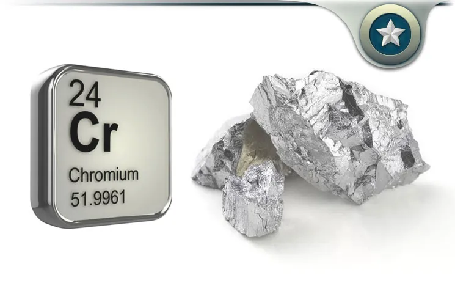

Хром
Хром (химический символ — Cr, от лат. Chromium) — химический элемент 6-й группы (по устаревшей классификации — побочной подгруппы шестой группы, VIB), четвёртого периода периодической системы химических элементов Д. И. Менделеева, с атомным номером 24.Простое вещество хром (при комнатной температуре) — это твёрдый переходный металл голубовато-белого цвета. Хром иногда относят к чёрным металлам.
Открыт в 1797 г. Л.-Н. Вокленом в минерале крокоит – природном хромате свинца РbCrО4. Название элемент получил от греч. слова χρῶμα – цвет, краска (из-за разнообразия окраски своих соединений).
Хром применяют в металлургии (в основном как компонент сталей, в частности нержавеющих) и для получения коррозионностойких и механически прочных хромовых покрытий. Соединения хрома применяют в качестве огнеупорных материалов, пигментов, дубителей кожи, протрав при крашении, реактивов, магнитных материалов и др. Соотношение областей использования: металлургия 75 %, огнеупоры 10 %, прочее 15 %.Металлический хром малотоксичен. Соединения Cr(VI) обладают местным и общетоксическим действием, вызывают поражение органов дыхания, кожи, слизистых оболочек, желудочно-кишечного тракта.
Металлический хром из Сr2О3 производят алюмотермическим или кремниетермическим методом. Пирометаллургическое восстановление Сr2О3 даёт продукт, загрязнённый углеродом. Чистый хром получают электролизом сернокислых растворов СrО3 или растворов хромоаммониевых квасцов (NH4)Cr(SO4)2. Глубокую очистку хрома ведут обработкой водородом при нагревании, вакуумной дистилляцией, зонной плавкой, иодидным рафинированием.

Хром не реагирует при обычных условиях с концентрированной азотной кислотой также из-за пассивации. Только при сильном нагревании концентрированная азотная кислота растворяет хром.